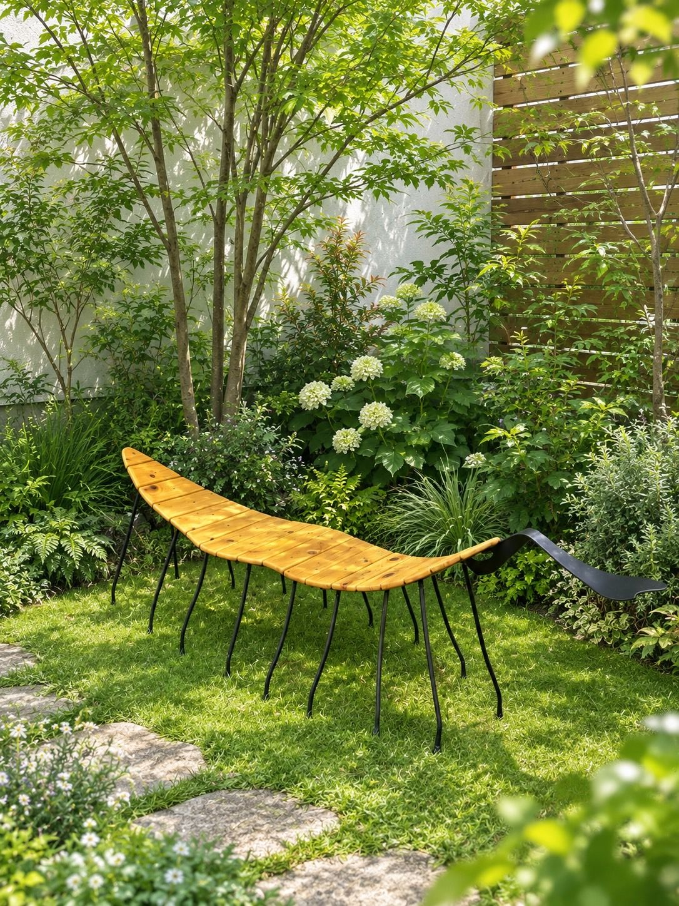

パブリックアートレンタル アイエル
鉄の作家・池内卓也の作品を、オフィスにレンタル。季節のボタンを押すと、流れる作品が切り替わります。
作家 池内卓也
溶接職人として鉄と向き合ってきた三十余年の技術で、彫刻をつくる作家。高知の工房で、一点ずつ手で仕上げています。
- 1961高知県香南市赤岡町に生まれる
- ─高知工業高校を卒業後、生家の鉄工所に勤務。高知県の溶接コンクールで2度入賞
- 1995有限会社アイエル物産を設立。ロートアイアンの門扉・フェンス、国内外の植物園のガーデンアイテムなどを手がける
- 2009高知県美術展覧会 先端美術（立体）の部に出品を始める
- 2011牧野植物園「花皿鉢コンテスト」デザイン賞
- 2023APOC（アジア太平洋蘭会議）で海外展示
作品と受賞歴
受賞受賞タイトル 設置設置場所 出品出品した展覧会

2014
覚醒する自我
受賞高知県展 特選
写真準備中


※ 作成年度が「確認中」の作品は調べています。写真の一部は公式サイト（iwatakuniyasu.wixsite.com/ikeuchi）掲載のものです。
REQUEST ORDER
リクエストオーダーあなたの場所のための、一点を。
レンタル作品のほかに、設置する場所のために新しい作品を企画・制作する「リクエストオーダー」も承ります。会社の想いや場所の歴史をうかがい、その空間にしかない一点をつくります。
企画から設置まで一貫
ご相談・デザイン・制作・設置まで、有限会社アイエル物産と作家が直接担当します。
完成前にCGで確認
設置後の姿を先に映像で見てから制作に入るので、「イメージと違った」を防げます。
屋外にも置ける鉄
美術館の入口、神社の参道、海岸、ワイナリーの庭など、屋外への設置実績があります。


ご依頼から設置までの流れ
- 01
ご相談・ヒアリング
設置したい場所、目的（エントランスの顔、周年記念、来客へのおもてなし など）、時期、ご予算をうかがいます。
- 02
現地の確認
空間の広さ・天井の高さ・光の入り方・人の動線・見る人の目線の高さを確かめます。
- 03
企画・デザインのご提案
スケッチと、CG映像で「その場所に置いたらどう見えるか」をつくり、形・大きさ・色を一緒に決めます。
- 04
制作
高知の工房で、池内卓也が一点ずつ手で溶接して仕上げます。
- 05
搬入・設置
建物や営業の都合に合わせて日程を調整し、照明との相性も見ながら設置します。
- 06
メンテナンス・移設
設置後のお手入れや、改装・移転のときの取り外しと再設置もご相談いただけます。
たとえば、こんなご依頼に
- 本社エントランスのシンボル
- 創業・周年の記念モニュメント
- 会社のロゴや理念をモチーフにしたオブジェ
- 吹き抜け・中庭・公開空地のアート
- 門扉・フェンスなどのロートアイアン
料金打ち合わせのうえでお見積りします
制作期間打ち合わせのうえでご案内します
作品の大きさ・設置場所・ご希望の時期をうかがってから決めます。まずはお気軽にご相談ください。
リクエストオーダーを相談する
有限会社アイエル物産 TEL 0887-54-0711
一点の作品が、
働く場所に起こすこと。
話
部署をこえた雑談
作品の前で足を止めた人同士に、自然な会話が生まれます。
誇
来客に見せたい職場
「うちのオフィス、ちょっといいでしょ」と言える空間に。
新
いつも少し新しい
月替わり・季節替えで、毎日の景色に変化を。
デモ ── 社内投票
来月の作品、
来月の作品、
みんなで決めませんか。
レンタルなら、次に置く作品を社員の投票で選ぶこともできます。下で試してみてください（このページ上だけのデモです）。
投票してみてください
置くだけで終わらせない。
01
社内報で作家を紹介
溶接職人から作家になった池内卓也の物語は、社内報のネタにもぴったり。
02
作品の“あだ名”を募集
「無題」の作品に、社内で名前をつけてみる。愛着がわきます。
03
季節替えをイベントに
入れ替えの日を、ちょっとしたお披露目の時間に。
04
採用ページの背景に
働く場所の雰囲気を伝える写真の、印象的な背景になります。
オフィスのここに、こんな作品。

受付・エントランス
ツリーハンガー
来客のコートを掛けられる、使えるアート。（設置イメージ）
執務エリアの窓際
植物
鉄の葉と茎。グリーンと並べても。

屋上・テラス
葉っぱベンチ
昼休みに座れる、生きもののようなベンチ。（設置イメージ）

会議室・応接
花と石
近くで見るほど発見のある、透かしの蝶。
ラウンジ・社員食堂
問う
仮面と針金の手足。見る人に問いかける作品。

吹き抜け・中庭
鉄筋の木
ねじった鉄筋の幹から、空へ広がる枝。
※ 掲載作品のレンタル可否・時期は作品の設置状況により異なります。「設置イメージ」は雰囲気を伝えるための画像です。
レンタルの流れ
期間・料金は、作品・設置場所・搬入条件をうかがってお見積りします。
1
相談
オフィスの写真と、置きたい場所を送る。
2
提案
空間に合う作品と置き方をご提案。
3
設置
業務に支障のない日時で搬入・設置。
4
入れ替え
期間ごとに交換、または返却。
小さなオフィスでも置けますか？
受付まわりやカウンターに置ける作品からご提案します。まずは写真をお送りください。
社員が触れても大丈夫ですか？
置き場所や動線を確認し、配置や固定方法を含めてご提案します。
入れ替えの頻度は選べますか？
月替わり・季節替えなど、ご希望をうかがって決めます。
気に入った作品は買い取れますか？
作品によってはご相談いただけます。
NEW2026年10月撮影 ／ 作家 池内卓也
新しく届いた、作品の写真と映像。
2026年10月に撮影した写真と映像です。社屋のエントランスや受付、屋上テラスに置いたときの存在感を、映像でご確認ください。
設置作品写真 3枚湧昇の夢
中土佐町立美術館（高知県）の入口赤・黄・青・白の鉄の羽が、黒い鉄の柱に沿って空へ舞い上がる。美術館の入口で来館者を迎えるモニュメントです。
おすすめ：本社エントランス・公開空地のシンボルに展示写真 2枚ミノムシ
ギャラリー展示錆びた鉄の胴体に、レースのように透かし彫りした羽。台座の上で、光と影の模様をつくります。
おすすめ：受付・応接の展示台に設置事例写真 3枚卵
井上ワイナリー（高知県香南市）の庭細い鉄の帯を幾重にも編んだ大きな球に、身を乗り出すような人の姿。見る角度で表情が変わります。井上ワイナリーの高台の庭に設置されています。
おすすめ：社屋の前庭・屋上に 実物
実物葉っぱベンチ（実物）
庭（屋外）これまで設置イメージでご紹介していたベンチの実物です。木の座面に細い鉄の脚、先端には鉄の頭がつきます。
おすすめ：屋上テラスの休憩スペースに屋外に設置写真 2枚丘の上の植物
屋外（丘の上）鉄の葉と種のかたちが、空に向かって伸びる。草木の中に立ち、風景に溶けこむ作品です。
おすすめ：中庭・植栽帯に施工例ロートアイアンの門扉
オーダー制作花のモチーフを透かしたロートアイアンの門扉。有限会社アイエル物産が手がけてきた、暮らしの鉄の仕事です。
おすすめ：社屋の門扉のオーダー制作に※ ページ上で流れる短い映像は音声なしです。「全編を見る」「映像を見る」はYouTubeで再生します。掲載作品のレンタル可否・時期は作品の設置状況により異なります。門扉はレンタルではなくオーダー制作のご紹介です。